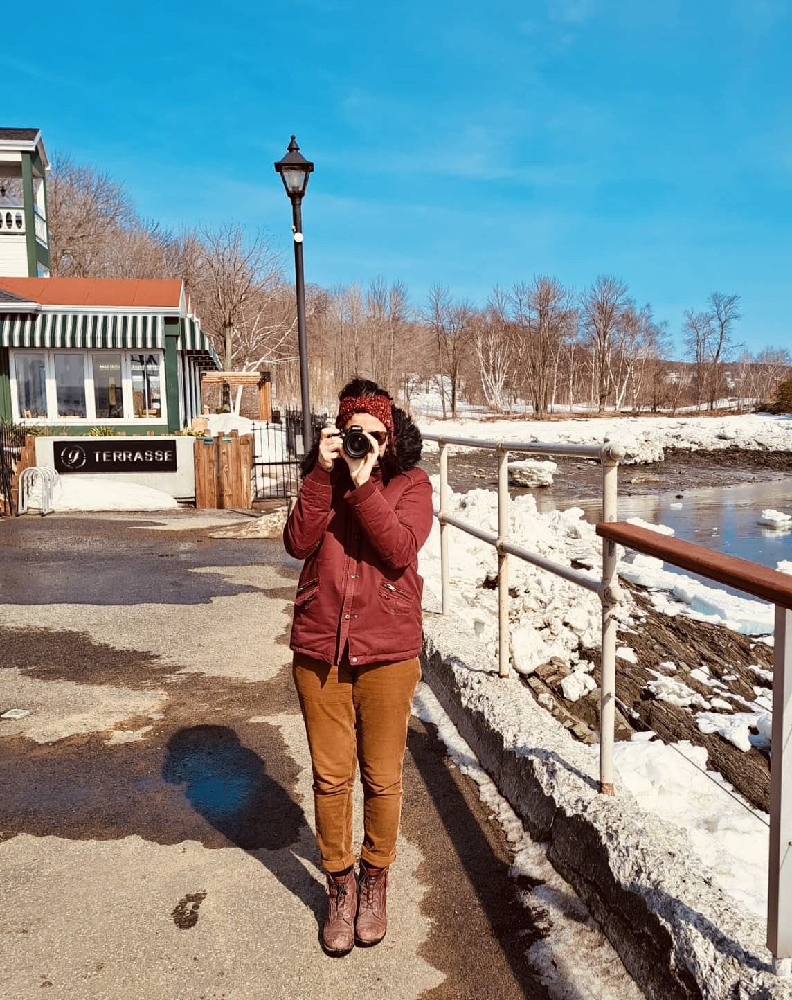

Hello, I'm Caroline a postdoctoral researcher at the Montreal Neurological Institute (The Neuro), McGill University, working in Julien Doyon’s laboratory.
WHAT ?

🔍 How does our nervous system combine information from the body 🤸🏽♂️ and the environment ⛰️ to make sense of the world and guide our actions?
🧠 What roles do different brain areas play in this process?
🦋 What about the spinal cord — is it simply a relay, or does it actively contribute by learning, adapting, and fine-tuning our movements?
⏳ How does this system evolve during healthy aging and in neurological conditions?
These are the key questions that drive my research.
HOW ?

I address these questions using a combination of experimental and neuroimaging approaches:
- Psychophysics — to test sensory perception and integration
- Electromyography (EMG) — to measure muscle activity
- Brain fMRI — to investigate brain activity
- Spinal cord fMRI — to explore spinal cord function
- Simultaneous brain & spinal cord fMRI — to study CNS integration
- Quantitative MRI — to assess the structure of the brain and spinal cord